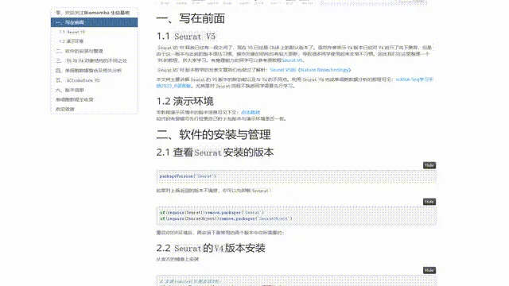
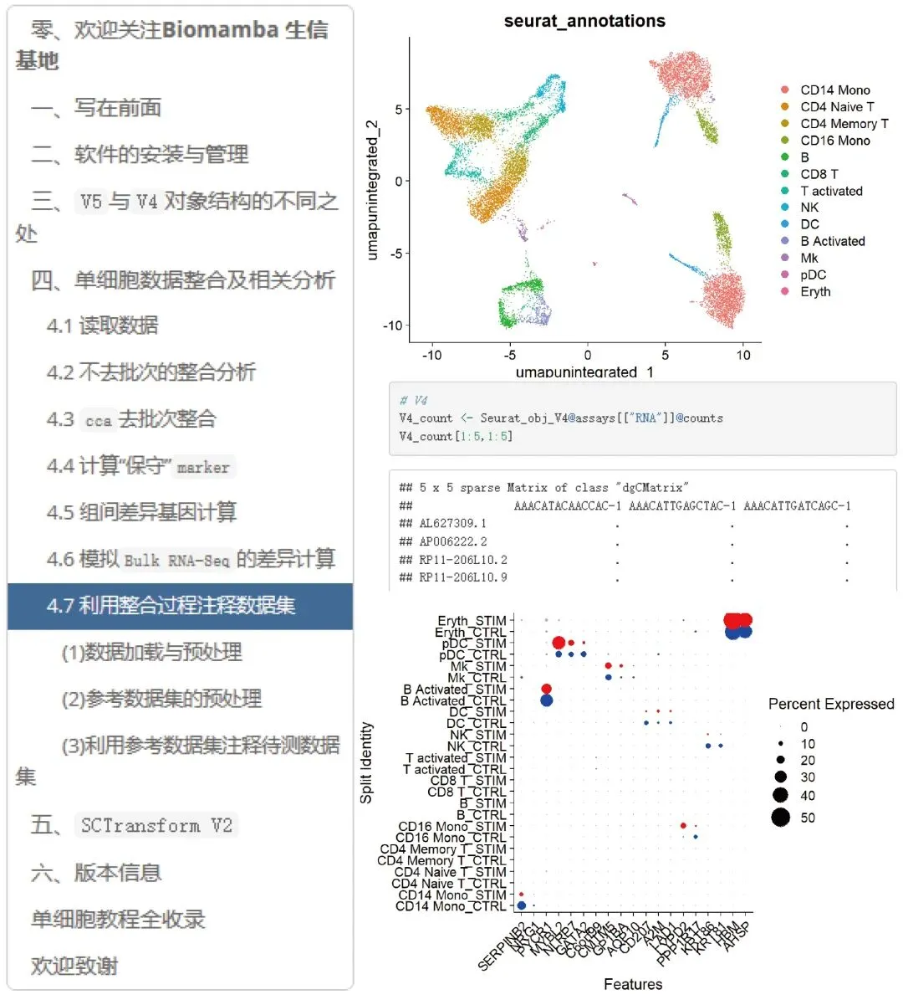

快速上手Seurat V5
原文：https://mp.weixin.qq.com/s?__biz=MzAwMzIzOTk5OQ==&mid=2247509880&idx=1&sn=3b7cd169ccfe688d10cb1ca70dc91e91&chksm=9b3cde28ac4b573ec6d5f4bceafa4294c0e9a001b7d0c0b64f274a9978b1438eeccc747ca0c0#rd 合集：单细胞教程全收录

写在前面

 Seurat包可以说是单细胞从业者的必修课，其主要的功能包括数据质控、归一化、降维、聚类、细胞亚群的识别和可视化(包括绘制热图、散点图、UMAP 和 t-SNE 等)，能够帮助用户快速、直观的分析单细胞数据。正因为Seurat的强大,我们此前的单细胞教程(二十万+播放量的单细胞教程)也是基于其V3、V4版本制作。但现在Seurat的V5版本已经成为了CRAN的默认版本，我们此前也介绍过V5版本的文章(Seurat V5的《Nature Biotechnology》)，这里我们整理了Seurat V5与V4的主要不同以及使用注意事项。有自学能力的同学可以参考：https://satijalab.org/seurat/更多学习资料可见：
2023订阅资料已完结~
龙年订阅须知 -Biomamba
Seurat包可以说是单细胞从业者的必修课，其主要的功能包括数据质控、归一化、降维、聚类、细胞亚群的识别和可视化(包括绘制热图、散点图、UMAP 和 t-SNE 等)，能够帮助用户快速、直观的分析单细胞数据。正因为Seurat的强大,我们此前的单细胞教程(二十万+播放量的单细胞教程)也是基于其V3、V4版本制作。但现在Seurat的V5版本已经成为了CRAN的默认版本，我们此前也介绍过V5版本的文章(Seurat V5的《Nature Biotechnology》)，这里我们整理了Seurat V5与V4的主要不同以及使用注意事项。有自学能力的同学可以参考：https://satijalab.org/seurat/更多学习资料可见：
2023订阅资料已完结~
龙年订阅须知 -Biomamba

所见即所得
一如既往地，我们整理好了测试文件和代码的html文件，供大家翻阅学习：

目录及分析输出图片示例：

解锁前需阅读：龙年订阅须知
订阅后获取学习手册下载链接：